Program Mission and Goals
MPA Program Mission Statement
To prepare our students for a career in public service by providing a core set of competencies anchored in the foundations of scholarly research and professional practice. Our students develop knowledge, skills, and public service values that equip them to be ethical and exceptional leaders in their communities who act with a commitment to public service, democratic values, accountability, social equity, and diversity.
Program Goals
- Develop well-rounded professionals with a strong foundation in theoretical knowledge, practical skills, and public service values.
- Equip students with the ability to be ethical and exceptional leaders in their communities, emphasizing a commitment to public service, democratic values, accountability, social equity, and diversity.
- Serve a diverse population of students, employers, and professionals by tailoring the program to meet their unique needs and expectations.
- Advance public service knowledge, research, and practice by fostering a collaborative and inclusive learning environment.
Logic Model
